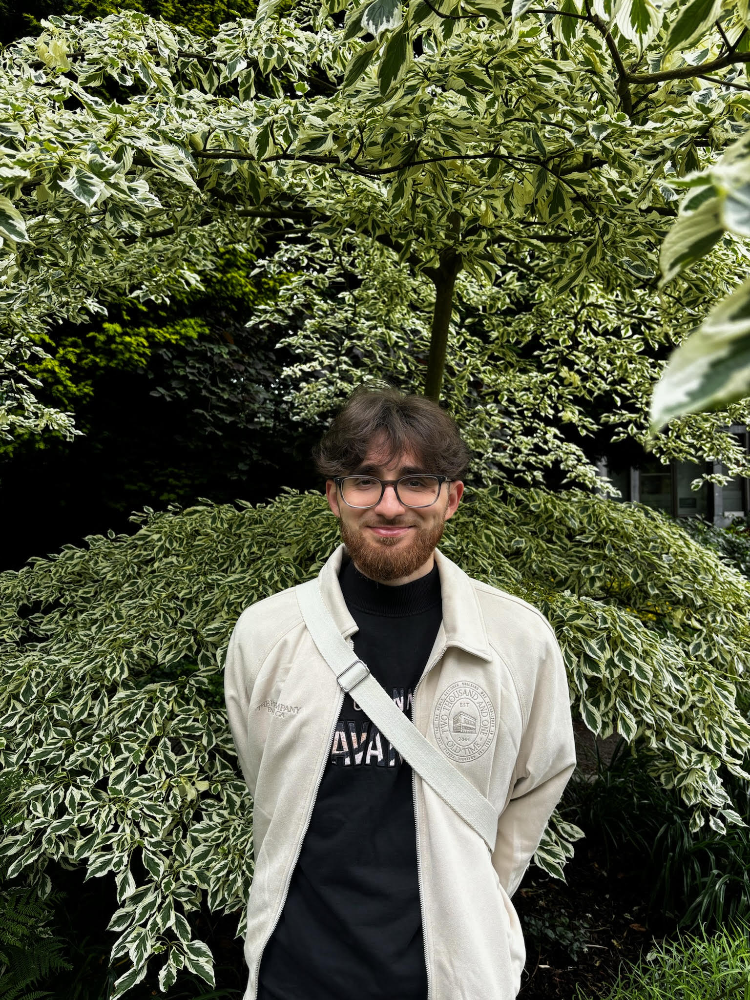
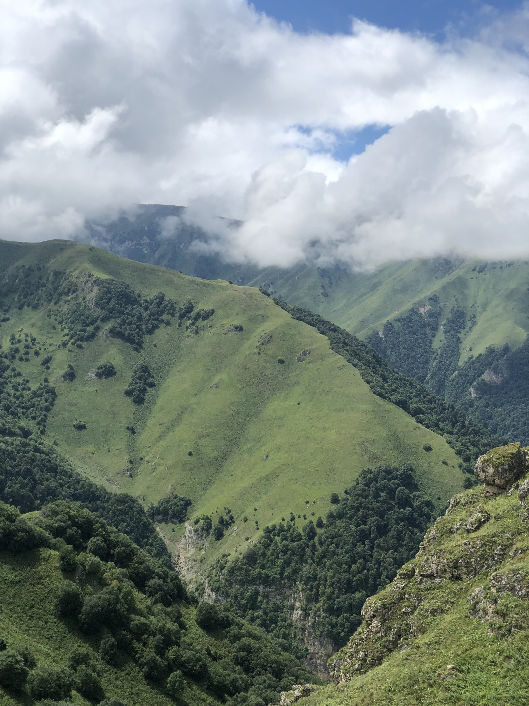
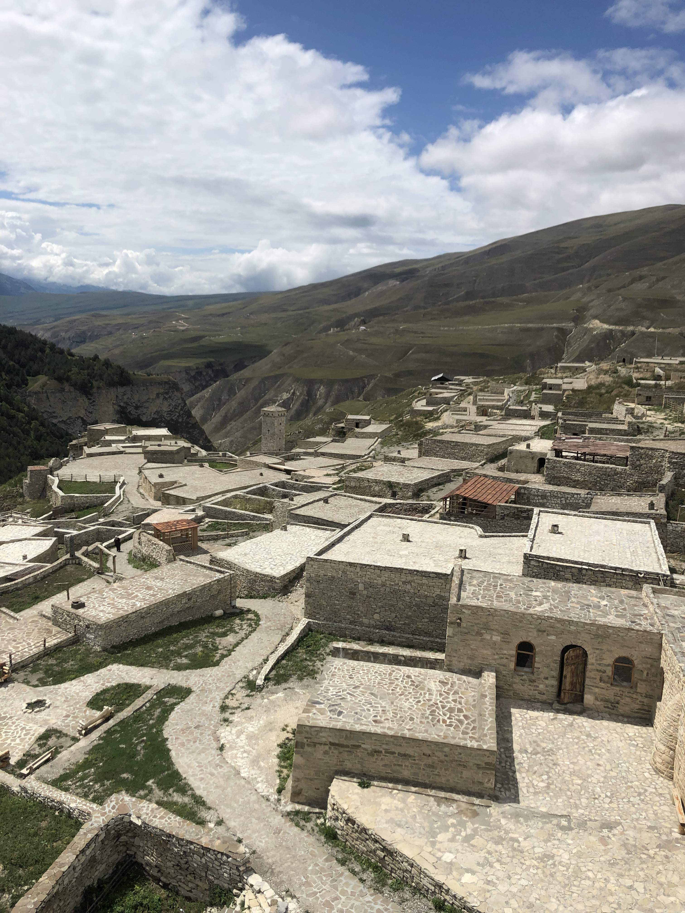
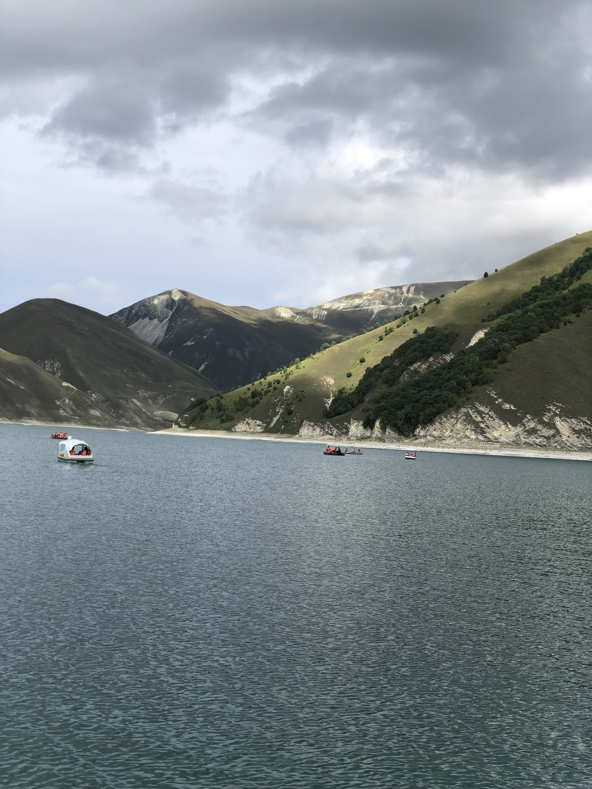
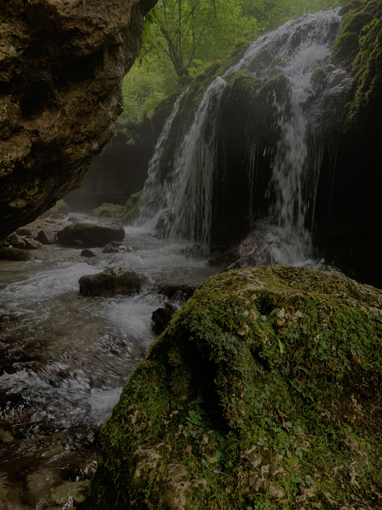

Portfolio / Graduaat Programmeren / Thomas More
Digitale
maker
met logica.
Hallo, ik ben Timur Nuradilov. Ik studeer Graduaat Programmeren aan Thomas More Kempen en bouw graag digitale oplossingen waarin logica, creativiteit en gebruiksgemak samenkomen.

C# SQL HTML/CSSScroll
PROGRAMMERENWEBDESIGNDATABASESPROBLEEMOPLOSSENDCREATIEF
PROGRAMMERENWEBDESIGNDATABASESPROBLEEMOPLOSSENDCREATIEF
Impact / Details
Kleine details maken een groot verschil.
Scroll storytelling
Ik bouw geen losse pagina’s.
Ik bouw ervaringen.
01 / Identiteit
Nieuwsgierig, leergierig en gedreven.
Mijn passie voor technologie en programmeren komt door mijn nieuwsgierigheid naar hoe dingen werken. Ik wil code gebruiken om duidelijke, bruikbare en aantrekkelijke digitale oplossingen te maken.
26jaar
4talen
3+IT-trajecten
02 / Uitgelichte projecten
Projecten die tonen wat ik kan bouwen.
03 / Vaardigheden
Mijn technische gereedschapskist.
Frontend
Websites bouwen met sterke layout, animatie en responsive gedrag.
HTML / CSS0%
JavaScript0%
Backend
C#0%
Databanken
SQL0%
CMS & Design
WordPress, Elementor, visuele structuur en gebruiksvriendelijke websites.
WordPressElementorUIResponsiveAnimaties
Mindset
Creatief, leergierig, probleemoplossend en gefocust op afwerking.
04 / Opleiding
Mijn traject richting softwareontwikkeling.
2023–2024
Thomas More — Toegepaste Informatica Bachelor
Verdieping in informatica, analyse en softwareontwikkeling.
2024–2025
Thomas More — Graduaat Programmeren
Focus op programmeren, websites, databanken en praktische projecten.
05 / Hobbies
Fotografie, natuur en architectuur.




06 / Contact